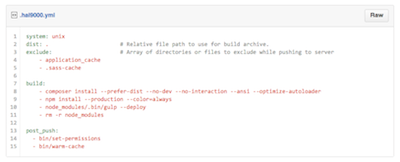

Hal - Version 2.4
What is Hal?
Hal is the deployment system we use to deploy many of our client-facing websites, including MyQL, Rocket Mortgage, QLMS, ORMS, Agent Insight, QuickenLoans.com and more!
New Features
-
Hal can now deploy to Amazon Elastic Beanstalk.
-
Hal can now deploy to Amazon EC2.
-
Hal now supports windows-based build servers.
This feature is not currently active, as Hal does not have access to a windows build server. The Web Core team is working on getting a dedicated windows build server.
-
Hal can store encrypted configuration that is available to build scripts.
-
Hal builds and pushes can now be configured from a .hal9000.yml file within the project codebase.
This file enables several new features:
- Custom dist directories
- Custom excluded sync directories
- Up to 10 commands may be provided for build, build_transform, pre_push and post_push
Changelog
User Experience (UX) Enhancements
-
The Groups page has been replaced by the easier to read Repositories page.
As a reminder, the nav menu is customizable through the Settings page.
-
Repository Status page
- Only one environment is displayed at a time. This will allow users to more easily find deployment information for the environment they are currently working in.
- Less information for each server deployment is displayed by default. This allows users to more easily see the status of each deployment.
Environment switching and collapsed servers
 Expanded server details
Expanded server details
-
Start Build page
- Hal can now build from any pull request, not just the ones listed.
- Environments that a project has no valid deployments for will not be displayed.
- Hal will attempt to correctly resolve build search queries such as "pull/100", "tag/2.0.0", SHA hashes, and more.
- The fuzzy search on the "Start Build" page has been rebuilt to be smarter and faster.
-
The Deployment Management page has been rebuilt again and is easier to use.
-
The Help page has been reformatted slightly to make it easier to find answers.
-
When viewing All Pushes or All Builds for a project, results can be filtered by git reference.
This is useful if you would like to see all pushes for a specific branch or pull request, for example.
Filtering build or push history by reference
-
The queue was added to the Dashboard of every user, not just administrators.
Developer Experience (DX) Enhancements
-
Encrypted Properties are available as environment variables for build and build_transform commands.
See Deployment scripting guide for more details.
-
Added support for .hal9000.yml configuration file.
This file is in YAML format, and similar to many CI services like Travis or Scrutinizer, can be used to customize the way Hal builds and deploys your project.
Example .hal9000.yml
-
The distribution directory Hal uses to archive builds can now be customized.
The default is "current directory".
-
The file and directory list Hal excludes from file syncs on push can be customized.
The default is "config/database.ini" and "data/". Skeletor applications should always exclude these.
-
Multiple commands can now be specified to be run for build, build-transform, pre-push and post-push.
-
Support GitHub Deployments API (New in GHE 2.1)
If you have a GitHub Wnterprise account, you can authorize Hal to make deployment updates on your behalf on the Settings page.
Once enabled, Hal will notify GitHub of a deployment everytime you push a project that you have write access to in github.
These deployment updates will be displayed on pull requests with the success/fail status, and link back to the info page for the push within Hal.
Bugs
-
Hal will no longer attempt to select a matching branch or release automatically if a user did not select one from the Start Build ref selector.
This would sometimes select the wrong git reference to build when releases and branches both started with numeric characters.
-
Build archives will be worked on/copied locally before transferring to/from the tremendously slow build storage.
This may or may not fix the issue where uncompressing the build would cause pushes to fail periodically.
Changes
-
Hal now only supports organization-owned github repositories.
-
When adding deployment relationships, URL is now required.
-
Build and push commands can no longer be edited from within the application.
-
For Hal Administrators, a Global Server Status page was added for checking whether Hal can communicate with application servers.
API Changes
-
Repository
- Links to Pull requests, branches, and tags were removed.
-
eb-name added.
-
githubUser changed to github-user.
-
githubRepo changed to github-repository.
-
buildCmd removed.
-
buildTransformCmd removed.
-
prePushCmd removed.
-
postPushCmd removed.
-
Deployment
-
eb-environment added.
-
ec2-pool added.
-
Server
Technical
-
Hal has been upgraded to Panthor 2.0.
-
Hal now uses phinx to enable better database migrations between versions.
-
Dependencies
The following components MUST go with this release:
- Hal 2.4
- Hal Core 2.5
- Hal Agent 2.2
Need Help?
If you find any bugs or want to request a feature, drop us a line in the hipchat room [Team] Web Core, or send us an email.
JIRA Tasklist
JIRA Release page for Hal 2.4
Bug
- [HAL-129] - Refactor, Improve how HAL resolves to a ref on the build start page
- [HAL-145] - Attempt to prevent tar/untar timeout issues
- [HAL-166] - Prevent Commit Status checks from crashing twig template
Improvement
- [HAL-27] - Error handling is inconsistent
- [HAL-33] - Create build from any pull request
- [HAL-92] - Port HAL to Panthor: Part 2 Electric Boogaloo
- [HAL-108] - Refactor server boxes on repo status
- [HAL-128] - Add repository reference on Push entity
- [HAL-136] - Add the deployment URL to status display
- [HAL-138] - Rebuild Add Deployment page.
- [HAL-142] - Add phinx migration for initial db schema
- [HAL-144] - Stop tar/untarring directly on /builds storage
- [HAL-150] - Update help pages with docs for new features
- [HAL-152] - Dont show environments on build page that the repo does not have a deployment for.
New Feature
- [HAL-48] - Add ability to filter repository status by environment
- [HAL-105] - Use hal9000.yml config file for deployment options
- [HAL-132] - Add phinx migrations to hal-core
- [HAL-139] - Add GitHub Deployment API support
- [HAL-140] - Add ability to deploy to AWS (EB)
- [HAL-143] - Add ability to filter push/build history by git ref
- [HAL-149] - Add ability to deploy .NET
- [HAL-151] - Add EB health status for EB deployments
- [HAL-153] - Add ability to deploy to AWS (Autoscaling EC2)
- [HAL-158] - Add a simple display for stuck builds/pushes on homepage for super admins
- [HAL-159] - Add a server connection test page
- [HAL-161] - Add encrypted properties for repositories
- [HAL-170] - Release HAL 2.4
Task
- [HAL-155] - Run build transform commands on windows server during push
- [HAL-157] - Make sure nuget works
- [HAL-117] - Move all queries into core repositories
- [HAL-146] - Update UX for EBS/.hal9000.yml changes
- [HAL-148] - Update email templates for deployment types
- [HAL-154] - Remove old builds
- [HAL-163] - Update Key Masters contact
- [HAL-164] - Update all event log message text and context during build/push.
- [HAL-165] - Prevent non-organization repo owners from being used
 Expanded server details
Expanded server details